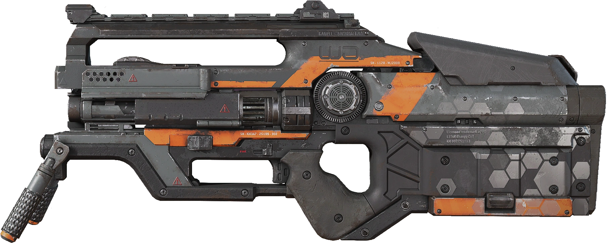
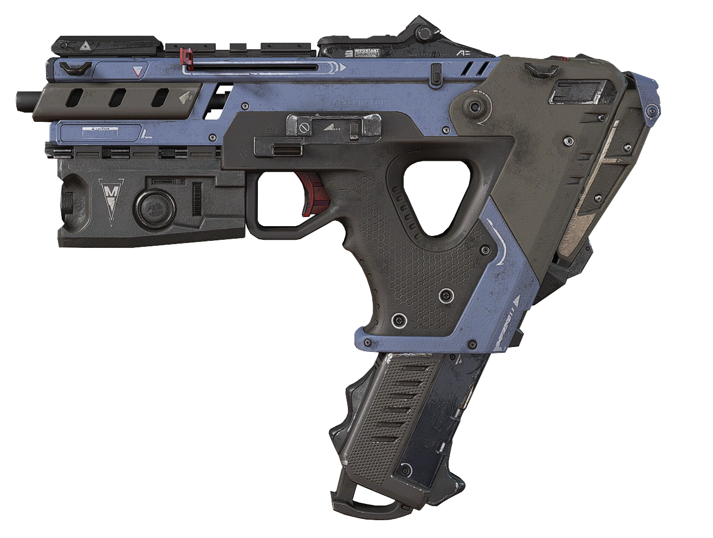

| Description about the gun | Weapon img |
|---|---|
|
The L-STAR EMG, or L-STAR, is a fully-automatic energy machine gun introduced in Season 2 Season 2 that utilizes Energy Ammo Energy Ammo. It fires red plasma orb-like projectiles and forcefully opens doors when it comes in contact. The L-STAR has a unique overheating mechanic, which triggers after 24 / 26 / 28 / 30 continuous shots; it only needs to reload if it overheats. |
 |
The Alternator SMG, or Alternator, is a submachine gun that utilizes Light Rounds Light Rounds. As the name implies, it fires through two alternating barrels. The twin barrel design provides a stable recoil pattern, allowing the Alternator to be effective at medium range. Compared to its cousin the R-99, the Alternator has better ranged accuracy and more damage per magazine at the cost of lower raw DPS. The Alternator can be enhanced with Disruptor Rounds Disruptor Rounds, which increases damage dealt against shielded targets by 20%. Note that this hop-up is currently not in the loot pool, though it may return in the future. |
 |